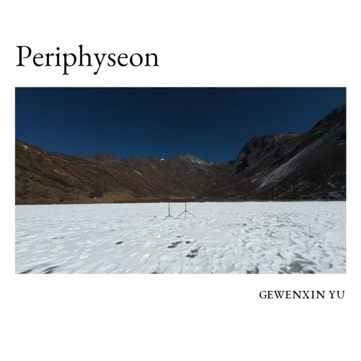

Periphyseon (2026)
Field recordings from Yema Haizi, a seasonally frozen lake at ~4,100m on the Tibetan Plateau, capturing wind, ice fracturing, and high-altitude ambient textures.

Notes
This recording session documents the acoustic environment of Yema Haizi (野马海子), a seasonally frozen lake nestled in the highlands of Kangding, Garzê Tibetan Autonomous Prefecture, Sichuan Province. Situated at an elevation of approximately 4,100 meters, the site presents a unique soundscape shaped by extreme altitude, thin air, biological occurrences, and the raw elements of the Tibetan Plateau.
Periphyseon faithfully documents the distinctive soundscape shaped by wind sweeping across the frozen lake, the haunting resonance of ice fracturing, and subtle high-altitude ambient texture.
- Equipment: Zoom H2N; Primo EM273 stereo pair with Zoom F3
- Status: Audio files pending release
Copyright © 2026 Mantle Productions
Audio recordings will be released under CC BY-NC-SA 4.0 upon publication.